Happens Before
前文描述了 Sequential Consistency，它是并发下我们对程序运行顺序的合理预期，也描述了底层结构为了提升效率，打破了原子性、可见性、顺序性。而之所以在单线程下没有这些问题，在并发下就会有线程安全的问题，是因为从编写的代码中，编译器无法对线程间执行顺序的相互依赖做出推断。
本章我们会看到，Java 中提供了哪些机制，让我们人工地指定线程间的相对执行顺序。
共享可变状态(Shared Mutable State)
如果两个线程毫无交集，我们还会关心执行的先后顺序吗？谁先谁后都不影响最终的结果。如果两个线程多次读取了同一个变量，但从来不修改它，执行的先后有关系吗？这种情况下谁先谁后都不影响最终的结果。
线程安全问题发生的前提是：线程间存在着共享可变状态的行为。
直白地说，同一个变量，有的线程写入，有的线程读取，那么谁先执行谁后执行就会影响最终的执行结果。
Java 的多线程原语
说了这么久并发问题，我们还是没有说 Java 的内容，这里先简单提一提 Java 的同步原语，大家先有个印象。Java 语言提供的同步原语主要有三种：synchronized 和
volatile 关键字，还有JUC 包中的其它工具，如原子类AtomicInteger 等。而语法层面提供的只有 synchronized 和 volatile1。
这些高层的原语通常都会起到多个作用，如 synchronized 同时保证了原子性、可见性、和顺序性，如 volatile 保证了可见性和顺序性。
synchronized
Java 会为每个对象都生成一个监视器 monitor，可以用来 lock 或 unlock（通常也称为 moniter enter 和 moniter exit），JVM 保证同一时刻只有一个线程能拿到锁。其它获取锁的线程会被阻塞，直到该锁被释放。另外这个锁是“可重入”的，即一个线程可以获取锁多次，这种机制有有效减少死锁发生（但注意 Java 不保证检测死锁）。
synchronized 语句需要给定一个要上锁的对象，后面跟一个代码块代表临界区，代表需要同步执行的代码整体。如：
public withdraw(int x) {
synchronized (account) {
account.setBalance(account.balance - x);
}
}
也可以直接用来修饰函数：
public synchronized withdraw(int x) {
this.setBalance(this.balance - x);
}
如果不指定“上锁对象”，则默认使用 this，如果是静态方法，则默认使用类对象
(Class Object)。
synchronized 在执行时，会先拿到上锁对象的引用，然后尝试对该对象的监视器执行
lock 操作，得到锁后开始执行代码块里的操作，代码块执行结束后（不管是正常结束还是抛异常），会在同样的监视器上执行 unlock 操作释放锁。
这里只提到了锁的“原子性”，下面的 Happens Before 会定义 lock/unlock 的可见性和顺序性。
volatile
volatile 关键词在语法上比较简单，用来修饰变量：
private volatile balance;
直觉上，它说明一个变量是“易变的”，这意味着读写该变量的时候，缓存上的数据都不可靠，得从内存中读写。这个关键词语义主要关心的是可见性，不过下面的 Happens Before 除了会定义它的可见性，还会定义它的顺序性语义。
跨线程操作
在 Java 语言规范里说明了有哪些跨线程的操作(inter-thread actions)会影响线程安全，为了完整性这里全文列出：
- Read(normal, non-volatile)，读取一个非 volatile 变量
- Write(normal, non-volatile)，写入一个非 volatile 变量
- 同步操作
- volatile read: 读取一个 volatile 变量
- volatile write: 写入一个 volatile 变量
- lock: 给一个监视器(monitor)上锁
- unlock: 给一个监视器(monitor)解锁
- 线程的开始和结束（Java 会生成一个相应的操作）
- 启动线程和判断线程结束的操作
- 外部操作(External Actions)，与外部世界交互的动作(可以简单理解成 native 方法)
- 线程分散操作(Thread Divergence Action)，导致线程无限循环的操作
对我们来说，通常只关心 (volatile) read/write, lock/unlock。其它操作对于想实现 JVM 的同学们比较重要，对使用者来说，通常它们的行为符合直觉。
Happens Before
（注：初次看不太懂没关系，但建议后面再复习复习，HB 规则对深刻理解线程安全问题很有帮助）
Java Memory Model(JMM) 里定义了一些跨线程操作的 Happens Before(HB) 关系2，并据此来决定线程间一些操作的相对顺序。如果说操作 A "Happens Before" B，则有两个含义：
- 可见性：A 的操作对 B 可见
- 顺序性：A 要在 B 之前执行
我们把 Happens Before 关系记为 hb(A, B)，本文也经常记为 A > B。
Happens-Before 规则包括3：
- 程序顺序规则：如果程序中操作 A 在操作 B 之前，那么在线程中操作 A Happens Before 操作 B
- 监视器锁规则：监视器上的 unlock 操作 Happens Before 同一个监视器的 lock 操作
- volatile 变量规则：写入 volatile 变量 Happens Before 读取该变量
- 线程启动规则：对线程
Thread.start方法的调用 Happens Before 线程内的所有操作 - 线程结束规则：线程中的任何操作 Happens Before 其它线程中检测到该线程的结束操作，要么是调用
join方法成功返回，要么是调用Thread.isAlive时返回false - 中断规则：一个线程在另一个线程上调用 interrupt Happens Before 被中断线程检测到 interrupt 调用（通过抛出 InterruptedExceptioin 或调用 isInterrupted 和 interrupted)
- finalizer 规则：对象的构造函数 Happens Before 该对象的 finalizer
- 传递性：如果
hb(A, B)且hb(B, C)，则hb(A, C)
有了这些规则，加上在代码里使用正确的原语，编译器就能正确地在多线程语境下为我们的代码排序，如下例中使用了 synchronized 在同一对象上同步，如下图4：

Java 并没有定义两个 lock 操作的先后顺序，这意味着上图中编译器无法确定哪个线程先进入临界区，但如果如图左边线程先进入，我们就可以通过 unlock 和 lock 的 HB 关系做出一些推论：
- 可见性：右边线程在执行时，可以确定
x = 1,y = 1，因为左边线程 unlock 前的修改必须可见 - 顺序性：右边线程对
i, j的赋值不能先于右边线程对x, y的赋值
两者一起让我们可以推断出，右边线程执行后，结果一定是 i = 1, j = 1。
参考
HB 规则很重要，本身也不复杂，但需要较多的背景知识，这里推荐一些读物
- JSL Chapter 17 Java 语言规范，第 17 章专门讲并发问题
- 深入分析 java 8 编程语言规范：Threads and Locks 对上面这篇规范的讲解，对其中一些关键点的分析很不错
- JSR 133 正式和学术的文档，可以先看看其中非学习证明的部分。
- 书《Java 并发编程实战》，不多说了，必看书籍
小结
我们的理想是 Sequential Consistency，只可惜由于现实原因 JVM 无法为我们提供这样的保证，因此我们一直努力寻找多线程下的合理顺序保证。
本章中我们了解了只有“共享可变状态”的情形下，多线程间的先后顺序才会引发线程安全问题，之后列出了 Java 中的跨线程操作，最后学习了 Happens Before 的（非正式）的规则，以及 HB 规则如何帮助我们对程序运行结果做出推论。
现在，只要我们能正确地使用这些同步的原语，我们就能写出正确的（符合与 JVM 预期）的代码了。下一章我们来实战看看一些并发问题，以及如何 HB 关系来解决这些问题。
另外，对于想深入了解的同学，Happens Before 这个保证对于 JVM 而言还是太弱了，所以 JSR 133 里又提到了 Causality Model（因果模型）。这块对我们使用方来说不重要，我也不能全看懂，有兴趣的可以看看 JSR 133。
final 修饰的变量也有一些特殊的语义，本章先不提及，有兴趣的可以参考 JSL 第 17 章
示例来源于书本《Java 并发编程实战》
Happens Before 是一种偏序关系，偏序是集合上的一种关系，满足自反性(a<=a)、反对称(a<=b && b<=a => a = b)、和传递性(a<=b && b<=c => a<=c)。
参考《Java 并发编程实战》第 16 章，我觉得它比 JLS 17 章和 JSR 133 中的描述都要清晰